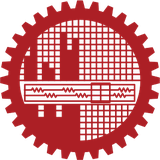
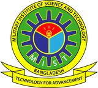

The long version.
Everything on one page. Prefer paper? Download the PDF ↓
Education
- Oct 2026 — now
M.Sc. in Electrical and Electronic Engineering

Bangladesh University of Engineering and Technology (BUET)- Supervisor: Dr. Shaikh Anowarul Fattah · Major: Communication and Signal Processing
- Courses: Digital Image Processing, Quantum Computing, Machine Learning and Pattern Recognition
- Aug 2022 — Jun 2026
B.Sc. in Electrical and Electronics Engineering

Military Institute of Science and Technology (MIST)- CGPA 3.94/4.00, ranked 2nd of 97; Dean’s List and Merit Scholarship in all four years
- Supervisor: Dr. Kazi Newaj Faisal
- Thesis: Application-Aware Deep Learning Optimization for Processing 2D Joint-Variable Representations · slides
- 2019 — 2022
Higher Secondary Certificate, Science
Milestone College · GPA 5.00/5.00
Research interests
- AI / DL
- Efficient deep learning, LLM systems and RAG, representation learning, sequence and temporal modelling, multimodal sensor fusion, edge AI, explainable AI
- Signals
- Time–frequency and non-stationary analysis, wavelets and multiresolution analysis, signal decomposition, adaptive filtering
- Applications
- Privacy-preserving biometrics, brain–computer interfaces, activity and gesture recognition, neurological monitoring, wearable sensing
- Modalities
- EEG, ECG, sEMG, MMG, IMU, FMCW radar micro-Doppler, bio-acoustics
Ongoing research
- Submitted
Enhanced masked Wigner–Ville distribution
High-resolution time–frequency analysis of non-stationary biomedical signals - Submitted
Synchroextracting Fourier masking
A sharp, noise-robust time–frequency representation - In preparation
D²-Net
Radar–Doppler decomposition for human activity localisation from FMCW micro-Doppler - Ongoing · lead
JPR — journal peer-review assistant
On-premise Llama-3 RAG pipeline with LangChain, Ollama and ChromaDB - Submitted
More under review
- Joint modulation and SNR estimation via multi-task learning
- EEG motor-imagery classification with adaptive signal decomposition
- Dual-hand IMU–sEMG fusion for VR human–machine interfaces (co-lead)
- Smartphone-based induction-motor fault diagnosis with MEMS accelerometry (supervised)
- IMU pen for signature authentication with embedded ML
- Lightweight convolutional patching networks for 2D joint-variable representations
- Completed · lead
Bangla abusive-speech detection
Transformer-based audio classification for broadcast systems
Experience
- 2026 — now
Research Assistant
Military Institute of Science and Technology (MIST), Dhaka- Developing a privacy-preserving handheld fingerprint-based automated attendance system for MIST and higher education institutions in Bangladesh.
- May 2024 — now
Co-founder
 INSIA Lab, Dhaka
INSIA Lab, Dhaka
- Grew the team 16×, from 3 to 49 members, with structured recruitment, onboarding and performance review.
- Delivered 15 multidisciplinary projects end-to-end.
- May — Jun 2025
Industrial Engineering Trainee
 Grameenphone (Telenor Group), Dhaka
Grameenphone (Telenor Group), Dhaka
- Studied workflows across IT, Network Services, Central Operations and Technology; wrote and presented a KPI-based report.
Leadership
- Jun 2025 — Jun 2026
Chairperson
IEEE MIST Student Branch- Launched 4 society chapters (SPS, EDS, MTT-S, PES); membership grew fivefold.
- Led 6 divisions and 100+ volunteers; ran 45+ technical events, 3 certification courses and 2 international conferences.
- Jun 2025 — Jun 2026
Founding Chair & Vice Chair (Organizing)
IEEE Signal Processing Society, MIST SB Chapter- Founded the chapter and organised 11+ technical workshops with BUET and DU.
- Jun 2025 — Jun 2026
Secretary General
MIST Robotics Club- Secured sponsorship for ROBOLUTION 2026 (1,000+ participants, 11 segments); oversaw 30+ robotics events.
- Jun — Jul 2025
BEAR Patron, MIST Representative
Bangladesh National Semiconductor Symposium- Led a pavilion of 17 university research teams at a 2,000+ attendee symposium.
Service & teaching
- Reviewer
- IEEE Transactions on Affective Computing (Q1)
- Instructor
- Hands-on Arduino 3.0 and Pixel Pulse (MIST Robotics Club, IEEE MIST SB), 150+ students
- Conferences
- Led student volunteers at IEEE RAAICON 2025; managed the 3-Minute Thesis and “Innovation for Smart Bangladesh” competitions at ICEEICT 2024
- Would teach
- Circuits, Digital Logic Design, Signals and Systems, DSP, Microcontrollers, Machine Learning
Awards
- 2026
Best Presenter Award
IEEE QPAIN 2026 - 2025
Best Paper Award
IEEE SPICSCON 2025 - 2025
Finalist & 2nd Runner-up, Biotech Poster Showcase
BEAR Summit & National Semiconductor Symposium - 2024
2nd Runner-up
IEEE Photonics & EDS Poster Designing Contest - 2023
1st Runner-up
MIST Innovation Club “Inception to Graphic Design”
Toolkit
- Languages
- ML
- Electrical
- Workflow
- Design
- Spoken